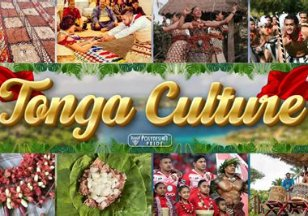

ʻOta ʻika
A traditional dish made with raw fish, coconut milk, lime or lemon, and fresh vegetables.
Experiences
From cultural traditions to island adventures, there are many ways to experience Tonga.

Culture
Tongan culture is centered around family, respect, community, faith, and traditions passed from one generation to the next.
Taste of Tonga
Food is an important part of Tongan gatherings and celebrations. Discover some traditional favorites.
A traditional dish made with raw fish, coconut milk, lime or lemon, and fresh vegetables.
Corned beef wrapped in taro leaves and cooked with coconut milk.
A traditional Tongan sweet food often served with coconut sauce.